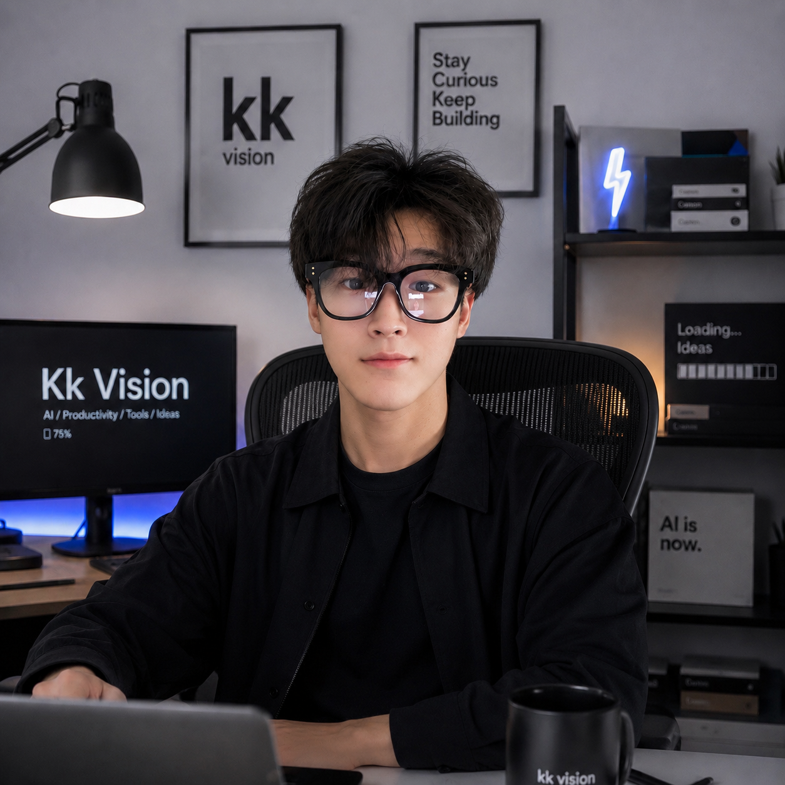

现在
KK Vision
AI Native Builder / Vibecoder
正在探索 AI 生产力工具、个人自动化、前端体验和从想法到可运行产品的最短路径。
KK Vision / AI Productivity / Tools / Ideas
我很冷静，但 AI 很离谱。
我用 AI、前端和设计直觉，把模糊想法快速做成可用、好看、甚至有点离谱的产品体验。

我擅长在信息还不完整的时候保持冷静，把看起来离谱的 AI 想法拆成可以执行的界面、流程和产品原型。
我喜欢那种从一句话开始，几个小时后就能摸到真实产品的速度。不是为了炫技，而是为了更快判断一个想法是否值得继续。
我的个人审美偏向克制、清晰、可用：像工程师一样落地，像设计师一样在意细节，像创业者一样追结果。
现在
AI Native Builder / Vibecoder
正在探索 AI 生产力工具、个人自动化、前端体验和从想法到可运行产品的最短路径。
Available for AI-native product experiments.